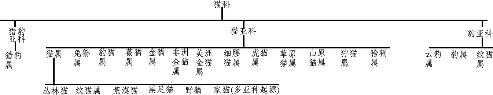
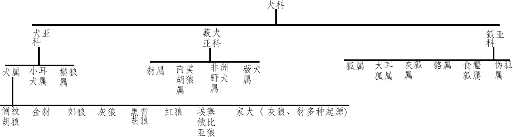

在日常生活中 宠物一直是人类的重要伙伴。
宠物指犬、猫及其它供玩赏、伴侣之目的而饲养或管领之动物。是人们为了精神目的 而不是为了经济目的而豢养的生物、是一种主要供个人陪伴的动物。
人类有意识地大规模驯化宠溺动物的历史 可以追溯到一万年前。早在1.5万年前 古人就开始驯养狗 猫也被人类驯化了3500年。古代几大文明均是世界宠物文化的发祥地。
人们养狗主要是为了保障安全 看家护院；养猫主要是为了消灭鼠害 保护粮食。
宠物为它们的主人提供身体和情感上的益处 饲养宠物可以作为伙伴 让生活更加充实。
例如：遛狗可以为人和狗提供锻炼、新鲜空气和社交互动。
宠物可以陪伴独居的人或与他人没有足够社交互动的老年人。
例如：有一类经过医学批准的治疗动物 主要是狗或猫 它们被带去探望因身心状况受限制的人 例如医院的 儿童或疗养院的老人。宠物疗法利用训练有素的动物和驯兽师与患者一起实现特定的身体、社交、认知或情感目标。
那么 你是否知道日常生活中陪伴着人类的猫猫狗狗们究竟是谁 它们又来自哪里呢？
猫 属于猫科动物 是全世界家庭中较为广泛的宠物。家猫的祖先据推测是古埃及时期的沙漠猫 波斯的波斯猫 已经被人类驯化了3500年（但未像狗一样完全地被驯化).
猫的物种分类如下：
从图中可知 现代家猫属于猫科中猫亚科下的猫属 起源于猫属中的多个亚种。
狗,属于犬科动物。中文亦称“犬” 狗分布于世界各地.有科学家认为狗是由早期人类从灰狼驯化而来 驯养时间在4万年前~1.5万年前。
狗的物种分类如下：
由图中可知 家犬属于犬科动物中犬亚科下的犬属 很可能是由灰狼、豺等物种经人类驯化而来。
我们知道了猫、狗在物种上的分类 那么它们又起源于哪里呢？
这幅时间轴告诉了我们答案：
从时间轴上我们可得知 猫和狗的共同祖先都可以追溯到5000万年前的小古猫。现代家猫的直系祖先是13万年前的利比亚猫。现代家犬的直系祖先是30万年前出现的灰狼。此时间轴并不一定准确 因为学术界猫狗起源仍然存在不少争议
它们经历了漫长的演化成为了如今的模样 那么在我们身边主要分布着哪些猫狗呢？
从图中我们可知 中国本土犬种丰富。但目前得到国际承认的仅有11种。因此实上所占比例应该更大。
中国的本土猫种较少 目前较为知名的主要有以下几个品类
从图表中可知 我国近年来猫的饲养数量已经超过了狗 猫的数量快速增长 推测的原因主要是城市生活空间的限制、生活节奏加快、猫的爱干净、不吵闹的生活习性。
虽然近年来非猫狗宠物的饲养数量一直在增加 但猫狗仍然占据着其中的大头。
既然我们身边有那么多的猫和狗 我们是否了解它们的生活习惯呢？
至此 我们知道了猫狗们的前世今身 知道了它们的喜怒哀乐 它们像朋友一样陪伴着人类 当你在生活中再次与它们相遇时 你是否会以不一样的眼光去看待它们呢？
1.凌光 张田堪 《狗从哪里来？至今仍是谜》《北京日报》
2.《2021年中国宠物行业白皮书》
3.《中国宠物行业白皮书系列——2022年中国宠物消费报告》
4.维基百科 宠物词条 宠物 - 维基百科 自由的百科全书 (wikipedia.org)
5.物种多样性数据平台 物种多样性数据平台 ESPECIES
6.MapBio 中国生物地图 http://map.especies.cn/
7.Tree of life web project Tree of Life Web Project (tolweb.org)